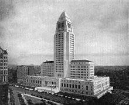
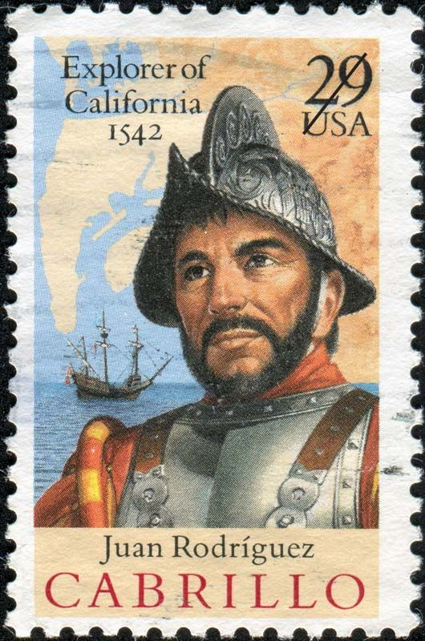

Fondata da francescani spagnoli nel 1781 con il nome di Nuestra Señora de Los Angeles, dal 1845 al 1857 fu capitale della California. Nel corso della guerra tra Stati Uniti e Messico fu occupata dai nordamericani (1856) e, terminata la guerra (1848), passò agli USA assieme alla sua regione. Divenuta un importante nodo ferroviario nella seconda metà del sec. XIX, crebbe rapidamente dopo la scoperta di importanti giacimenti petroliferi e lo sviluppo delle industrie agricola e cinematografica.
La zona in cui si trova la città di Los Angeles era abitata, prima dell'arrivo degli spagnoli, da oltre trenta tribù indigene, chiamate in maniera generica dagli iberici "indiani Apache e Navajo". Il primo spagnolo ad arrivare nell'attuale Alta California fu Juan Rodríguez Cabrillo, che il 6 ottobre 1542 occupò l'area per la Corona di Castiglia. Alcuni storici riferiscono che il primo spagnolo che raggiunse l'area di Los Angeles fu, invece, Fernando de Alarcón.
L'Alta California appartiene attualmente agli Stati Uniti d'America, mentre la Bassa California fa parte del Messico. La California fu popolata dai Gesuiti, che si stabilirono in entrambe le zone. Nel 1767 Carlo III di Spagna ordinò l'espulsione dei gesuiti dalle proprie terre americane. Due anni dopo, il 2 agosto 1769, una spedizione capeggiata da Gaspar de Portolá, accompagnato dal frate francescano Juan Crespi, raggiunse l'Alta California per espellere dalla zona i Gesuiti e consentire lo stanziamento dei francescani. Nell'agosto del 1771, il frate francescano Junípero Serra fece costruire la "Misión de San Gabriel Arcángel" nell'attuale area di Los Angeles. Il 4 settembre 1781, il governatore Felipe de Neve con un gruppo di spagnoli, indiani e schiavi inaugurò il primo stanziamento che denominò, dedicandolo all'ordine francescano, "El Pueblo de Nuestra Señora la Reina de los Ángeles de Porciúncula".
Nel 1839 la storia di Los Angeles fu marcata per sempre dalla dichiarazione della città come capoluogo della California. L'americano John C. Fremont occupò, nel 1846, Los Angeles sottraendola ai messicani. Due anni dopo, il 2 febbraio 1848, con la firma del Trattato di Guadalupe Hidalgo, si concluse la guerra fra Messico e Stati Uniti d'America e l'Alta California divenne ufficialmente territorio degli USA.